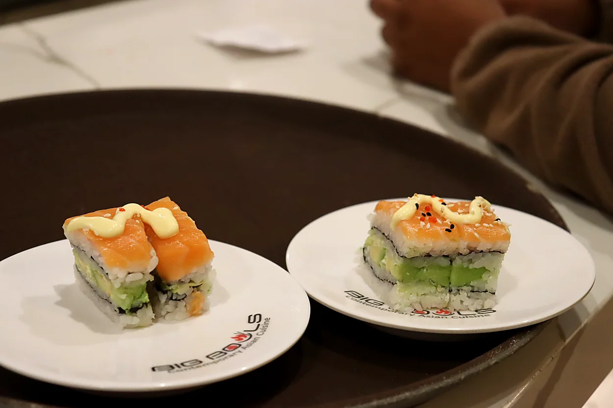
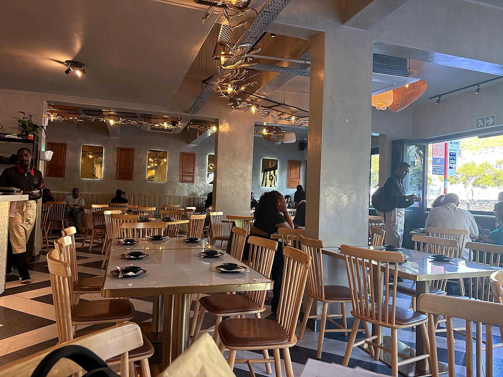
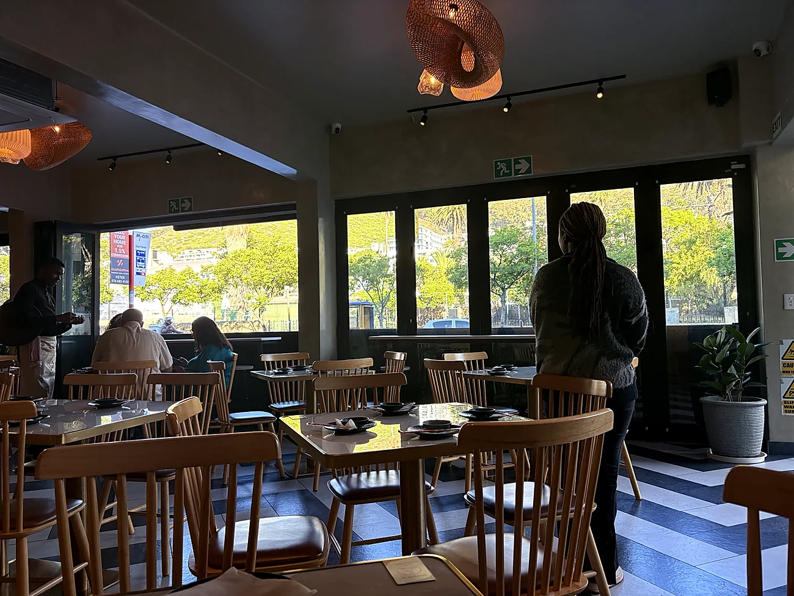
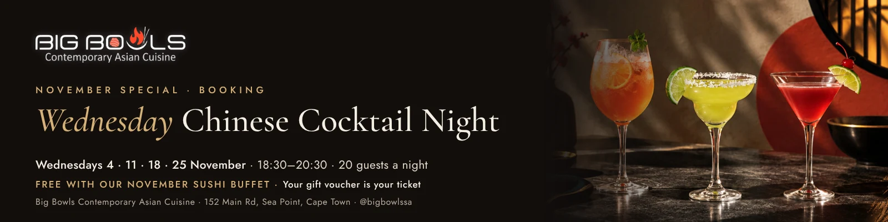
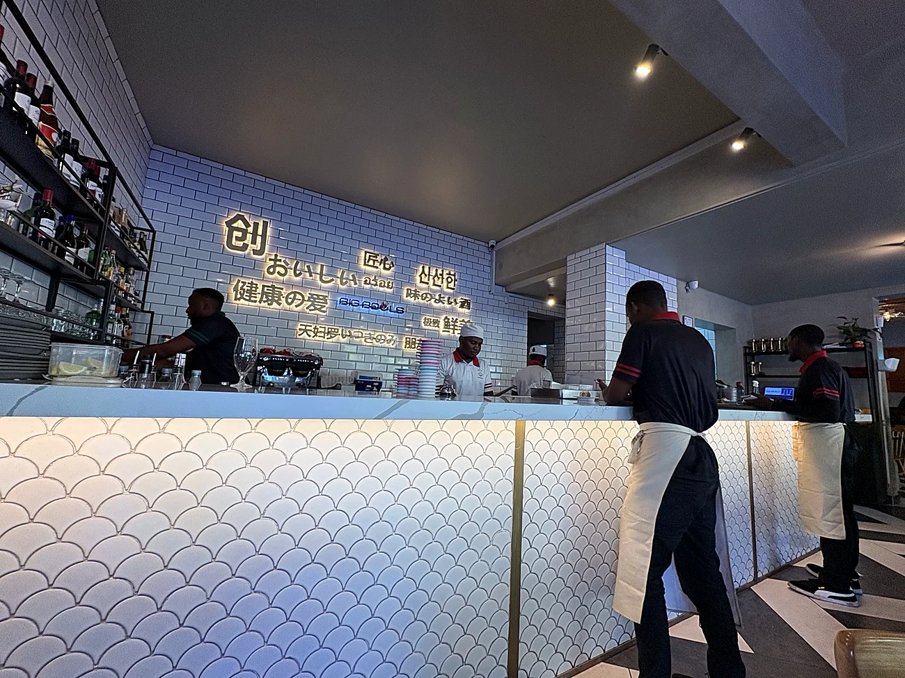
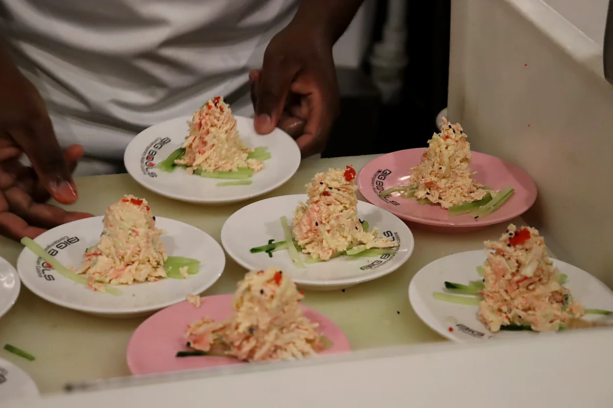

Sushi favourites
Colourful bites and freshly prepared rolls.

Sea Point · Cape Town
Contemporary Asian cuisine, freshly prepared favourites and a welcoming place to gather in the heart of Sea Point.
Welcome to Big Bowls
Located on Main Road in Sea Point, Big Bowls is a relaxed space for sharing contemporary Asian dishes, enjoying sushi and spending time with friends and family.
From a casual lunch to a lively evening out, we look forward to welcoming you.
Find Us →
Fresh from our kitchen
Get a taste of what makes a visit to Big Bowls special. These photographs were taken at our restaurant.

Colourful bites and freshly prepared rolls.

Watch the detail that goes into every plate.

Warm, satisfying Asian-inspired favourites.
November 2026 · Special Event
Shake, stir and taste. Join an interactive evening exploring Chinese-inspired cocktails with tea, coffee and baijiu, guided by an award-winning bartender.
Enjoy our November sushi buffet and receive a numbered gift voucher for a complimentary place, subject to availability. This event is not sold as a separate ticket.
Booking essential. A submitted form is not a confirmed reservation; the team confirms by WhatsApp. Waiting list available when full. Ages 18+; identification may be requested. Drink responsibly.

Shake · Stir · TasteEvent Booking
Visit Big Bowls during November and ask our team about the numbered cocktail-night voucher issued at checkout.
Use the voucher's QR code or the booking button on this page to choose a date and enter your voucher number.
Once your place has been confirmed by WhatsApp, bring the voucher along to check in.
A glimpse of Big Bowls



Visit Us
Big Bowls Contemporary Asian Cuisine
152 Main Road
Sea Point, Cape Town, 8005
Keep in touch
Find restaurant updates, new dishes and event announcements on our social channels.